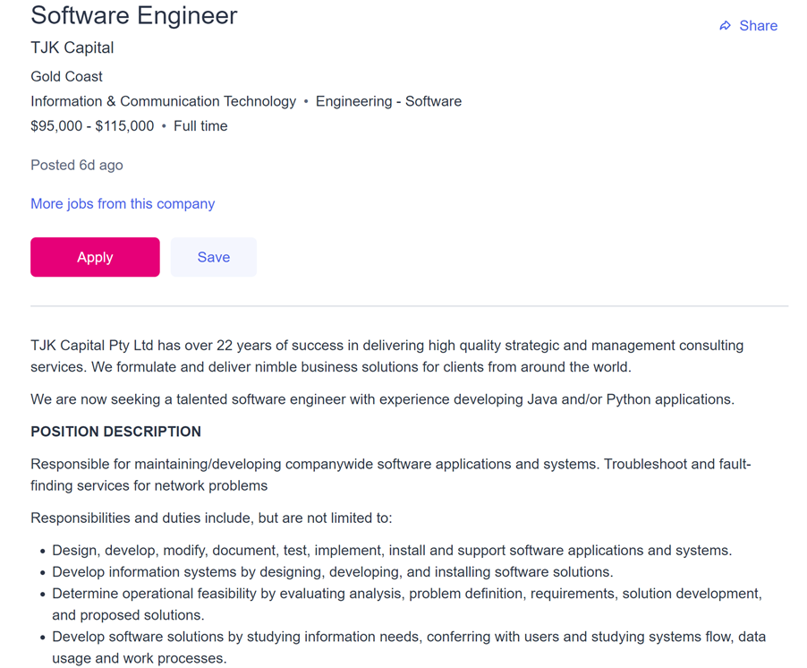
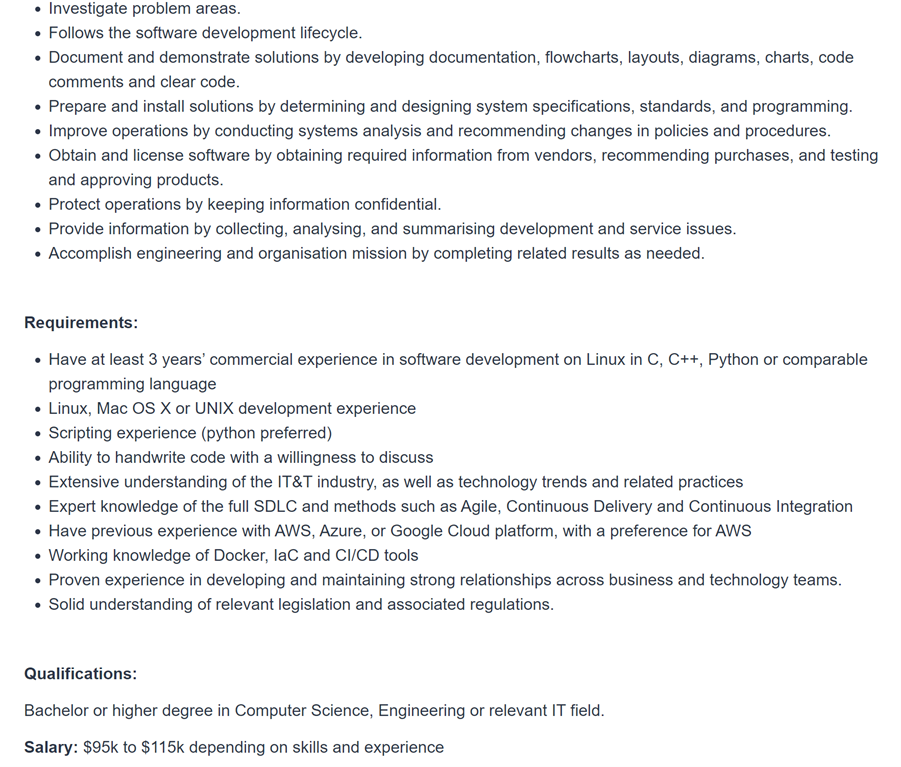

Ideal Job
Description of Position:
This position is for a software engineer at TJK Capital. The applicant would be responsible for the development of software applications and systems for the company. They would also be responsible for the upkeep of said applications and systems and would have to figure out what needs to be improved on and what needs fixing. The employee would then need to document and present these solutions using flowcharts, diagrams, charts, code comments, and clear code. Another of their responsibilities would be to collect, analyse and summarise development and service issues.
I find this position is very appealing because I love programming and I especially love having to find where issues lie and figuring out how to fix them, as well as finding ways to improve things. In my experience a program can always be improved on in some way.
Requirements of position:
This position requires a lot of skills and previous job experience with said skills. One of the skills required is coding experience in multiple programming languages like C, C++ or Python specifically on Linux. Another is development experience on Linux, Mac OS X or UNIX. The company also requires applicants to have a very good understanding of tech trends, legislations and regulations.
Current skills:
Unfortunately, I currently have no qualifications or experience. I’ve studied programming in multiple languages for some years and am very keen to learn and practice more but have no practical or job experience yet.
My plan to obtain required skills:
I plan to obtain the skills, qualifications and experience required for this position by first getting a bachelor’s degree in Information Technology or Computer Science to get the knowledge and qualifications required to then get an entry level job and build up my experience for some years while also keeping up with new technologies that come up and improving on my skills.


URL for Job Advertisement